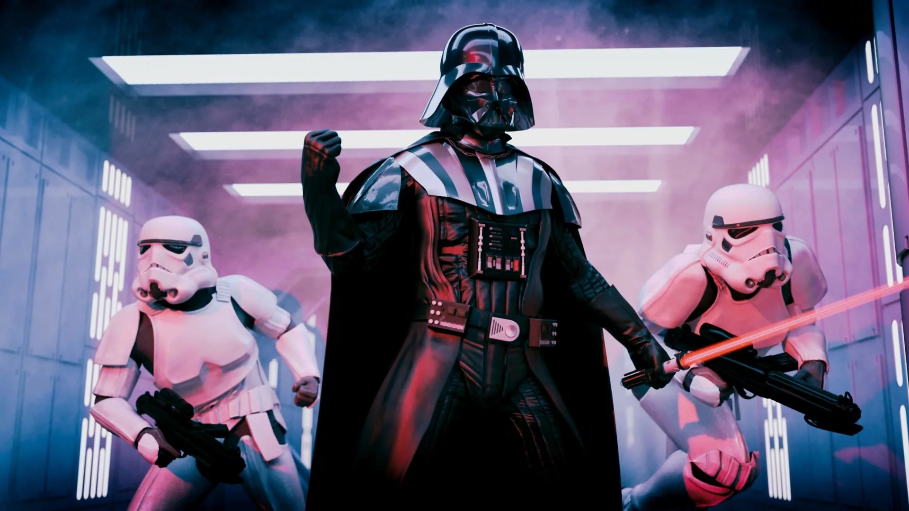

Звёздные войны: Эпизод 1 – Скрытая угроза
Неспокойные времена настали для Галактической Республики. Налогообложение торговых путей к отдаленным солнечным системам стало причиной раздоров.
В стремлении добиться своего обуянная алчностью Торговая Федерация с помощью мощных боевых кораблей взяла в кольцо блокады маленькую планету Набу, лишив её всех поставок.
В то время как члены Конгресса Республики ведут напряженные дебаты в связи с тревожными событиями, Верховный канцлер втайне от всех поручил двум рыцарям джедаям — хранителям мира
и справедливости в Галактике — урегулировать конфликт…
Звёздные войны: Эпизод 2 – Атака клонов
В Галактическом Сенате неспокойно. Несколько тысяч звёздных систем объявили о намерении выйти из состава Республики.
Движение сепаратистов, возглавляемых загадочным графом Дуку, создало трудности малочисленным джедаям по сохранению мира и порядка в галактике.
Сенатор Амидала, бывшая королева Набу, возвращается в Галактический Сенат, чтобы голосовать по принципиальному вопросу: созданию АРМИИ РЕСПУБЛИКИ в помощь несправляющимся джедаям…
Звёздные войны: Эпизод 3 – Месть Ситхов
Идёт третий год Войн клонов. Галактическая Республика,
некогда бывшая спокойным и гармоничным государством, превратилась
в поле битвы между армиями клонов, возглавляемых канцлером Палпатином,
и армадами дроидов, которых ведёт граф Дуку, тёмный лорд ситхов. Республика
медленно погружается во тьму. Лишь рыцари-джедаи, защитники мира и
справедливости, могут противостоять злу, которое вскоре поглотит галактику.
Но настоящая битва идёт в душе у молодого рыцаря-джедая Энакина,
который разрывается между долгом джедая и любовью к своей жене, сенатору
Падме Амидале.
И от того, какое чувство в нём победит, зависит будущее всего мира.
Хан Соло: Звёздные Войны. Истории
Фильм расскажет о похождениях юного космического
сорвиголовы Хана Соло и его верного напарника Чубакки и о
том, как они стали самыми быстрыми пилотами и самыми
хитрыми контрабандистами далёкой Галактики.
Изгой-один: Звёздные войны. Истории
Сопротивление собирает отряд для выполнения
особой миссии - надо выкрасть чертежи самого
совершенного и смертоносного оружия Империи. Возглавляет
бойцов неуправляемая и бесстрашная Джин Эрсо, у которой
в этом самоубийственном задании есть и личные мотивы.
Не всем суждено вернуться домой, но герои готовы к этому,
ведь на кону судьба Галактики.
Звёздные войны: Эпизод 4 – Новая надежда

Татуин. Планета-пустыня. Уже постаревший рыцарь
Джедай Оби Ван Кеноби спасает молодого Люка
Скайуокера, когда тот пытается отыскать пропавшего дроида.
С этого момента Люк осознает свое истинное назначение:
он один из рыцарей Джедай. В то время как гражданская война охватила
галактику, а войска повстанцев ведут бои против сил злого Императора,
к Люку и Оби Вану присоединяется отчаянный пилот-наемник Хан Соло,
и в сопровождении двух дроидов, R2D2 и C-3PO, этот необычный отряд
отправляется на поиски предводителя повстанцев – принцессы Леи.
Героям предстоит отчаянная схватка с устрашающим Дартом Вейдером
– правой рукой Императора и его секретным оружием – «Звездой Смерти».
Звёздные войны: Эпизод 5 – Империя наносит ответный удар
Борьба за Галактику обостряется в
пятом эпизоде космической саги. Войска Императора начинают
массированную атаку на повстанцев и их союзников. Хан Соло и
принцесса Лейя укрываются в Заоблачном Городе, в котором их и захватывает Дарт Вейдер,
в то время как Люк Скайуокер находится на таинственной планете джунглей Дагоба. Там Мастер -
джедай Йода обучает молодого рыцаря навыкам обретения Силы. Люк даже не предполагает, как скоро ему придется
воспользоваться знаниями старого Мастера: впереди битва с превосходящими силами Императора и смертельный поединок
с Дартом Вейдером.
Звёздные войны: Эпизод 6 – Возвращение Джедая
В шестом эпизоде «Звездных войн» Дарт Вейдер создает вторую
«Звезду Смерти». Он объединяет все силы зла, чтобы с помощью
этого смертоносного оружия нанести последний сокрушительный удар
по повстанцам и их союзникам. Люк Скайуокер вместе с принцессой Лейей
и верными дроидами R2D2 и C-3PO отправляется спасать своего друга Хана Соло,
который попал в плен к отвратительному Джаббе Хатту - могущественному повелителю преступников.
Звёздные войны: Эпизод 7 - Пробуждение силы
Через тридцать лет после гибели Дарта Вейдера и Императора
галактика по-прежнему в опасности. Государственное образование
Первый Орден во главе с таинственным верховным лидером Сноуком и
его правой рукой Кайло Реном идёт по стопам Империи, пытаясь захватить
всю власть. В это нелёгкое время судьба сводит юную девушку Рей и бывшего
штурмовика Первого Ордена Финна с героями войны с Империей - Ханом Соло,
Чубаккой и генералом Леей. Вместе они должны дать бой Первому Ордену, однако
настаёт тот момент, когда становится очевидно, что лишь джедаи могут остановить
Сноука и Кайло Рена.
Звёздные войны: Эпизод 8 - Последние джедаи

Новая история о противостоянии света и тьмы,
добра и зла начинается после гибели Хана Соло.
В Галактике, где Первый Орден и Сопротивление яростно
сражаются друг с другом в войне, героиня Рей пробудила в себе Силу.
Но что произойдет, когда она встретится с единственным оставшимся
в живых рыцарем-джедаем - Люком Скайуокером? Кайло Рен перешел на Темную
сторону Силы и убил собственного отца, заняв высокую позицию
в Первом Ордене. Но куда приведут его неуемные амбиции, подаренные
по наследству грозным дедом Дартом Вейдером?
Звёздные войны: Скайуокер. Восход
Фильм завершает невероятную историю семьи
Скайуокеров, длящуюся уже более сорока лет,
и обещает дать ответы на все загадки из предыдущих
серий. Зрителя ожидают старые и новые герои, уникальные миры,
увлекательные путешествия на край Галактики
и грандиозный финал фантастической саги.